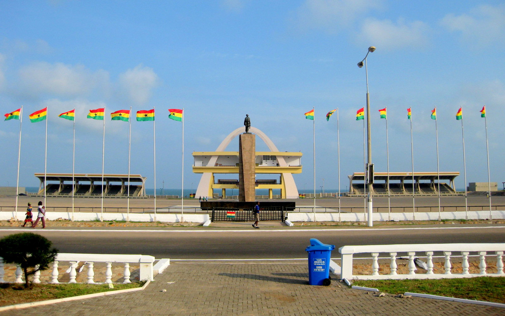

Homowo recounts the migration of the Gas and reveals their agricultural success in their new settlement. According to Ga oral tradition, a severe famine broke out among the people during their migration to present day Accra. They were inspired by the famine to embark on massive food production exercises which eventually yielded them bumper harvest. Their hunger ended and with great joy they "hooted at hunger" this is the meaning of the word HOMOWO.
This harvest festival is celebrated by the Ga people from the Greater Accra Region of Ghana. It begins with the sowing of millet by the traditional priests in May. After this, thirty-day ban on drumming is imposed on the land by the priests.
The festival is highlighted at varying times by different quarters of the Ga tribe. The Ga-mashie group of the tribe will celebrate theirs' a little earlier than the La group.